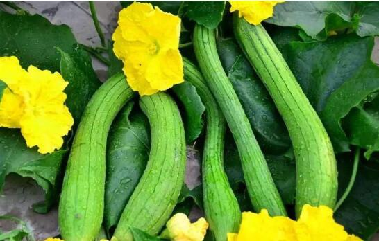

吃丝瓜的注意事项有哪些？
丝瓜是一种常见、常吃的家常蔬菜，而且价位也不贵，不分南方和北方，都可以轻易购买到丝瓜。可是这样寻常的蔬菜，也是一种食疗药疗效果都很好的蔬菜。它能清热解毒也能降脂建重，能美容也能提高免疫力，能通经活血也能有通乳下奶的作用。然而却不是任何人都适合食用的。

丝瓜的饮食禁忌
1、应该适量食用和不宜食用丝瓜的人
有两类类人对食用丝瓜有一定的注意事项，一是体寒的人，二是痢疾中的人。
从中医角度来看，因为丝瓜性凉味甘，有清热解毒、通经活络，利肠的作用。对于孕妇和体虚内寒来说，不是不可以吃丝瓜，丝瓜中含有B族维生素，维生素C,还有纤维素，这些都是对人体是有利的物质，能改善便秘，促进消化。但是由于丝瓜凉性的特质，所以要注意服用的量，不可多服用，否则会引起腹泻、腹痛，严重时还会引起宫缩，导致流产。而腹泻者不宜在病情发生时食用丝瓜，那样会加剧腹泻的情况。
而从西医角度来看，丝瓜中含有多种皂甙成分，皂甙本身就有清热、解毒、凉血的作用。一般人食用丝瓜的量建议为，一般不超过2根，一周2-3次为最佳。建议以上两种人，以一般人的食用量为参照标准来控制自己的食用量。
2、丝瓜变苦后切记不能食用
但是在我国的丝瓜品种中，是没有苦味的，而是清甜的。也就是说丝瓜不是想苦瓜那样天生就带苦味，而为什么丝瓜会变苦，这可能有几种原因：
1、连续的高温、光照不足、干旱等都会造成丝瓜生长营养不良，因为没有这些条件它不能很好的吸收养分，最后会变成苦的丝瓜。
2、还有一种是因为，丝瓜在生长时，施肥的时候并有按比例施肥，使用不合理，氮肥施的量较多，而有机肥和磷钾肥用量却偏少。
3、在同一块地里连续的种植丝瓜，这样苦味丝瓜的几率会很高。
平常的丝瓜营养价值很高，吃了对身体当然是很好的 。但是如果使用苦味丝瓜，怎会有中毒的危险，会出现的症状有：头晕、四肢无力，胃绞痛等。苦丝瓜中含有一种叫碱糖甙生物碱的物质，它是一种存在在植物中的毒素，人对糖苷生物碱的毒性非常敏感 ,中毒率高 。在我们的印象之中，很多食物虽然有毒，但是如果将其经过高温烹饪以后就不会存在中毒的现象，如：云南的各种可食用野生菌。但是苦丝瓜中的这种生物碱受热不宜破坏分解，不论是熟的还是生的都容易中毒，因为苦丝瓜不能吃。
哪些食物不能与同食
1、丝瓜不能和泥鳅一起吃
丝瓜中含有丰富的B族维生素，而其中维生素B1的含量是很高的，它的功效是能缓解疲劳、治疗脚气、有利于消化。而泥鳅中存在一种分解酶，它能分解维生素B1,使其的营养价值大大的降低，如果两种食物在一起吃，不利于人体对相应的营养的吸收。
2、丝瓜不能和白萝卜一起吃
白萝卜和丝瓜分开来看，两种蔬菜的自身的营养价值都很高，但是却不能在一起食用，尤其突出的一点坏处是，对男性的健康问题方面，会使男性的性功能减退容易出现阳痿早泄的现象，容易元气大伤。
3、丝瓜不能菠菜、芦荟一起吃
菠菜中很有丰富的膳食纤维、矿物质、碳水化合物等，这些物质是能促进肠胃蠕动的，而丝瓜具有清热利肠的作用，也含有纤维素，维生素B、C，还有皂甙等物质，如果两种食物一起食用，则会加快肠胃蠕动，导致腹泻等症状。而芦荟和丝瓜都属于凉性蔬菜，如果在一起食用，则会体内寒气加重，从而引起腹泻、腹痛等症状。
我们日常生活中都有哪些丝瓜？
如果按植物学上来分，分为有棱丝瓜和普通丝瓜（无棱丝瓜），普通丝瓜无棱，其外观呈圆筒形（又分为长、中、短，三种筒形），而有棱丝瓜有棱，它的外观呈棒形（分为长棒形、短棒形），有棱丝瓜是华南地区的特色品种，而如果按颜色来分，除了我们平时见到的最常见的绿皮丝瓜外，还有白皮丝瓜。下面小编就来介绍一下新有的几种丝瓜种类。
1、棱丝瓜
这种丝瓜是广州市农业科学研究所选育出的品种，2006年通过了广东省农作物品种的审定。种植这种品种，应该选择肥沃且富含有机质的土壤。它通体是深绿色，瓜条直，其连续坐果能力强，长势中等偏强，而且耐贮存，耐热、耐雨水，运输也很方便，口感很好。而且其抗病能力强，是比较好种植的一种中早熟丝瓜品种。
2、白皮丝瓜新品种
这是一种新的早熟杂交白皮丝瓜。其外皮是白绿色，坐果的连续性强，果实呈短筒型，抗寒能力强且耐湿，由于它适应能力很强，所以在我国种植范围广，很多地方都有种植，其外表光滑，抗病能力强，方便运输贮存。
我国在20世纪80年代末开始了丝瓜育种，虽然起步不早，但是丝瓜在家常食用的菜谱中却是普及非常广泛。白皮丝瓜的产量和销量都不如绿皮丝瓜，但是不论那种丝瓜，其实成分和禁忌都大同小异，因此在食用的时候，还是要参考一下禁忌，才能让丝瓜发挥更优良的蔬菜效用。
参考文献：
[1] 钱江，“苦丝瓜不要吃”, 生活百科
[2] “丝瓜的禁忌人群及搭配宜忌食材”，苹果绿养生网
[3] “丝瓜不能和什么一起吃 吃丝瓜的禁忌”，果蔬百科全网
[4] 李健生，刘志华，陈祖华，唐可兰，旷碧峰 ，“白皮丝瓜新品种雁白 1 号的选育”，长江蔬菜，2018
 上一篇
上一篇